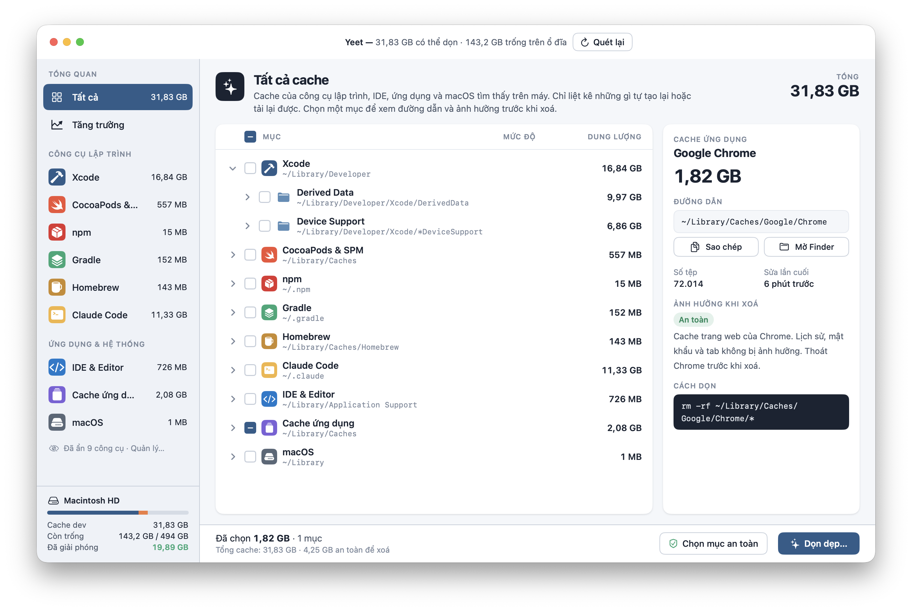
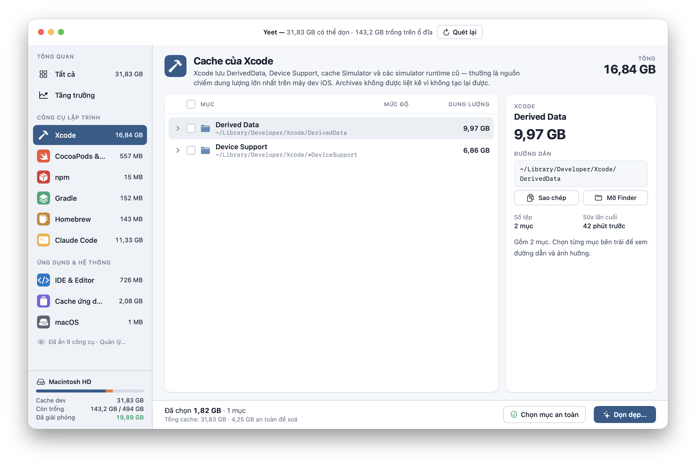
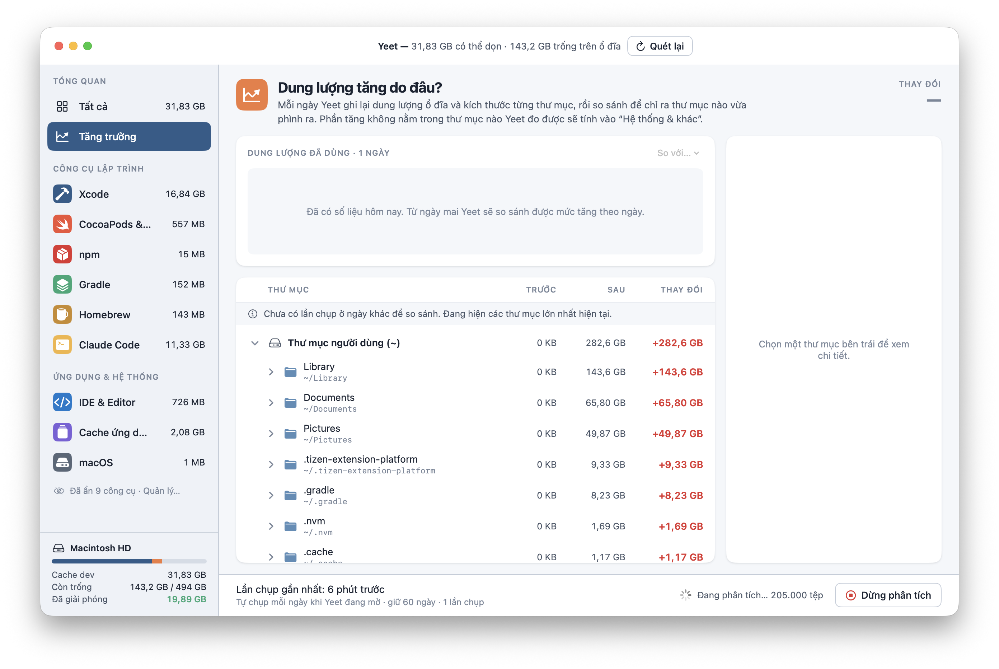
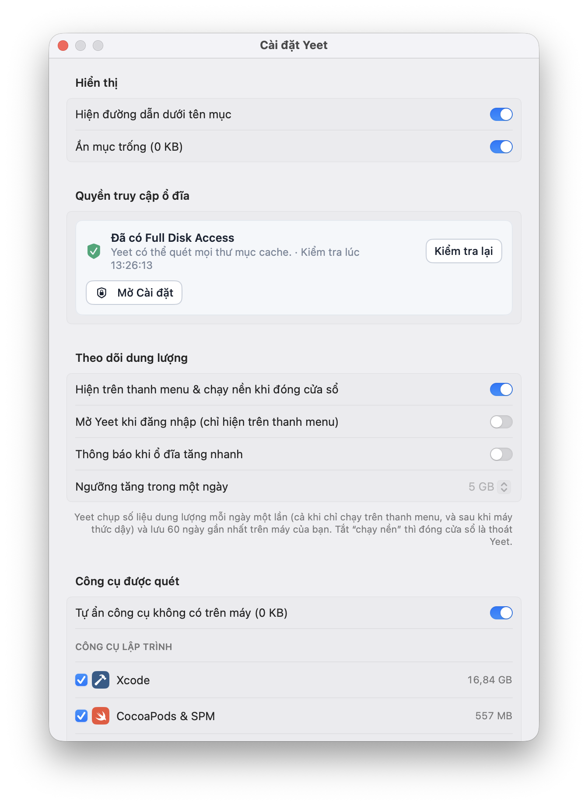
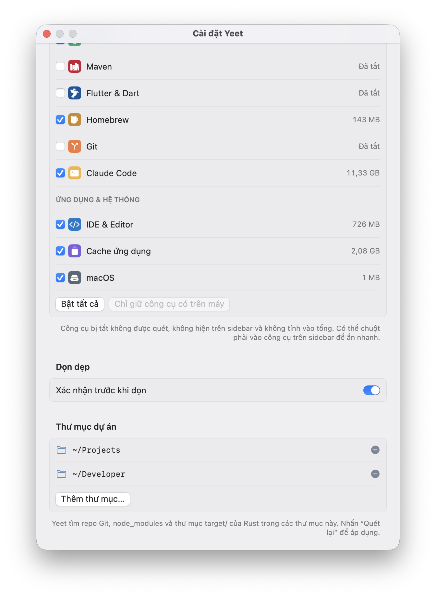

Clean developer caches on your Mac.
Know exactly what you delete.
Yeet finds caches from Xcode, npm, Gradle, CocoaPods, Homebrew, Claude Code and more than 10 other tools. Every item shows its path, size and what happens if you delete it — you decide.
Version {{ version }} · {{ requirementEn }}

Scan
Open the app and it scans. Seconds later you see how much you can reclaim and how much space is left on your disk.
Review
Select an item to see its path, file count, last modified time, impact level and the exact command that will run.
Clean
Tick items one by one, or press “Select safe items” to pick only what rebuilds itself. Confirm, then clean.
Few buttons, lots of information.
One window, one list, one clean button. Everything else is there to help you make the right call.
By tool, down to every folder
Xcode splits into Derived Data and Device Support. CocoaPods, npm, Gradle, Homebrew, Claude Code, IDEs — each tool gets its own group, with the real paths on your Mac. Xcode Archives are never listed because they can’t be rebuilt.


Where did my disk space go?
Every day Yeet records the size of each folder and compares it with the day before, so you can see which folder just grew. History is kept for 60 days, on your Mac.
Yeet can live in the menu bar and notify you when your disk grows past a daily threshold you set.
You decide what Yeet scans
Turn each tool on or off. Disabled tools aren’t scanned and don’t count toward the total. Add project folders to find node_modules, Git repos and Rust target/ folders.
“Confirm before cleaning” is on by default — there’s always one last check.


A tool that deletes files should be upfront about it.
Yeet asks for broad access and really deletes files. Here’s what you should know before installing.
Deleting is permanent
Yeet runs the equivalent of rm -rf — files skip the Trash and can’t be recovered. The exact command is always shown under “How to clean” before you press the button.
Requires Full Disk Access
To measure ~/Library and hidden folders, Yeet needs Full Disk Access. That permission allows reading all your files — only grant it if you trust where you downloaded the app. Without it Yeet still runs, but some items will be missing.
Your data stays on your Mac
Yeet only reads folder sizes and modification dates, never file contents. The 60-day size history is stored locally. No account, no analytics sent anywhere.
Only download from this page
An app with Full Disk Access is an attractive target for fake copies. Download from this page and check the SHA-256 at the bottom before opening it.
Quit apps before cleaning
Deleting the cache of a running app (Chrome, Xcode, IDEs) can make it misbehave temporarily. Yeet notes this on each item — read it before you clean.
Revoke access anytime
System Settings → Privacy & Security → Full Disk Access → turn off Yeet. To uninstall, drag Yeet to the Trash.
FAQ
{{ f.q }}
{{ f.a }}
Reclaim tens of gigabytes in a minute.
Download Yeet v{{ version }}{{ requirementEn }}
{{ checksum }}
Verify: shasum -a 256 {{ fileName }}